ESG 공공디자인 2 — 환경을 위한 디자인
ESG 공공디자인 – 2. 환경을 위한 디자인
ESG Public Design : Environmet by Public Design
Ⅰ. 환경에 대한 관심의 시작.
The Silent Spring_침묵의 봄
“ For as long as man has dwelt on this planet, spring has been the season of rebirth, and the singing of birds. Throughout the world, spring is strangely silent, for many of the birds are dead incidental victims of our reckless attempt to control our environment.”
“ 인간이 이 지구에 살아온 이래로 봄은 새들의 지저귐이 울려 퍼지는 계절이었습니다. 그러나 오늘날 전 세계적으로 봄은 이상하리만치 고요합니다. 이는 우리의 무분별한 환경 오염으로 인해 그로 인한 희생양으로 수많은 새들이 죽어갔기 때문입니다. ”
- 미국 생물학자 레이첼 카슨(Rachel Louise Carson), 1962
우리의 삶은 과학과 기술의 발전을 통해 풍요로운 삶을 누리게 되었지만, 과학과 기술을 기반으로 한 산업의 발전을 위한 대량생산에 따른 환경 오염과 생태계 파괴라는 심각한 문제 또한 발생하였다. 1962년 출간된 레이첼 카슨(Rachel Louise Carson)의 ‘침묵의 봄’은 인간의 일상 생활 속에서 인류의 생존을 위협하는 심각한 환경 오염에 대한 위기를 경고하면서 세계는 환경에 대한 관심을 처음 갖게 한 계기가 되었다.
세계의 각 나라는 자국의 경제 발전을 추진하면서 소비적 경제를 추구하기 위해 많은 새로운 제품과 짧은 제품 생애주기를 통해 소모하며, 낭비를 통한 경제적 이익 추구를 통해 결국 우리의 환경을 파괴하는 상황에 이르렀다.
디자인 영역에서는 이런 경제가치 중심의 산업적 생산방식을 기반으로 한 환경에 대한 폐해를 인지하고 개선하려는 의식이 생기면서 소위 'Greening'이라는 디자인의 개념이 시작되었다. 이후 생태계와의 공존을 의미하는 '에콜로지(Ecology)'의 개념으로 발전하고 이를 기반으로 1980년대 중반부터 일기 시작한 환경에 관한 관심 고조에 따른 환경을 위한 디자인의 트랜드는 재활용(Re-cyling)과 재사용(Re-use)의 주제로 대두되기 시작하였고 이후 그린디자인은 3R(Reduction, Recycle, Reuse)로 구현되었다. 이후 1990년대 들어 건강과 지속적인 삶을 추구하는 웰빙(well-being), 친환경적이고 지속가능한 소비 패턴의 LOHAS (Lifestyle of Health and Sustainability) 등의 인간 생활 및 환경을 인식한 트렌드로 나타나고 이후 1983년 유엔 환경개발위원회에서 시작된 지속가능성(Sustainability)의 개념과 2000년대 유엔 기후 변화에 관한 정부 간 패널 (IPCC) 보고서에서 제시된 생태적 회복력(Ecological Resilience)의 개념에까지 이르고 있다.
Ⅱ. 환경을 위한 공공디자인
1. 스타벅스_환경을 위한 그리너 스토어(Starbucks - Greener Stores)
https://www.gcrmag.com/starbucks-expands-greener-store-initiative-globally/
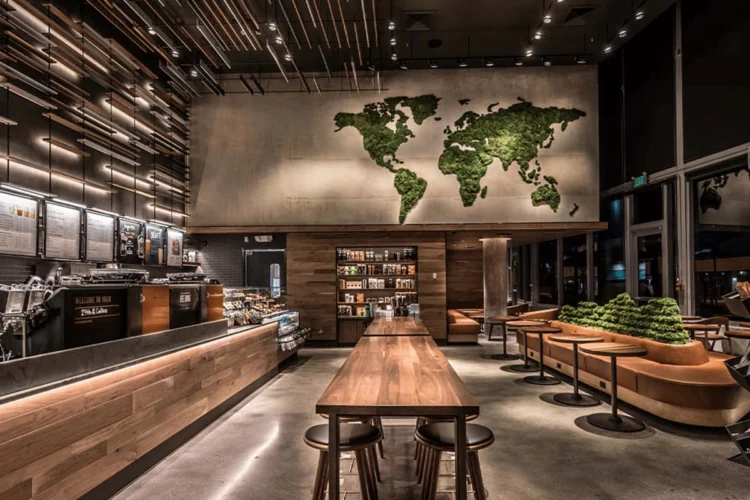
스타벅스는 ESG 관점에서 에너지와 물 절약, 폐기물 분리를 통해 환경 영향 기준을 만들고 지속가능성을 갖춘 매장 ‘그리너 스토어(Greener Store)’를 운영하고 있다. 2018년 미국과 캐나다 매장을 시작으로 현재까지 ‘그리너 스토어스(Greener Stores)’ 이니셔티브를 통해 전 세계 6000여개 이상의 매장을 친환경 매장으로 전환하였다. 스타벅스는 2025년 까지 총 10,000개의 매장을 ‘그리너 스토어’로 인증하기 위한 목표를 가지고 있다.
“미래에 대한 우리의 큰 비전은 전 세계 모든 스타벅스 매장이 지속가능해 지는 것입니다. 전 세계 파트너의 협력을 통한 ‘그리너 스토어’의 성장에 매우 기쁩니다.”
-스타벅스 최고 지속가능 책임자, 마이클 코보리-
“Our big vision for the future is for every Starbucks store around the world to be more sustainable. That’s why I’m excited to see the continued growth of Greener Stores globally, driven by the passion of our partners.”
-Michael Kobori, Chief Sustainability Officer at Starbucks-
https://about.starbucks.com/stories/2023/whats-inside-a-greener-store/
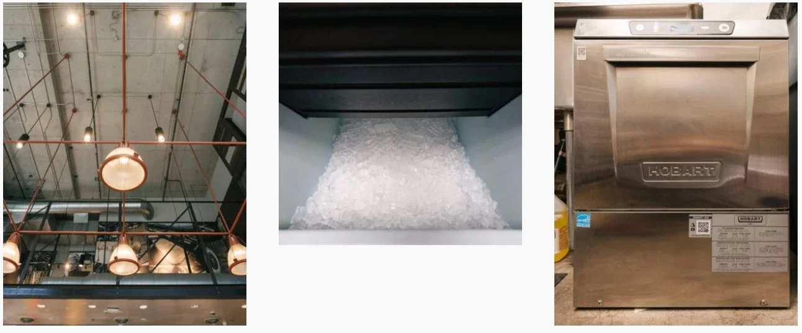
그리너 스토어의 주요특징
1) 에너지 효율성 향상: 고효율 조명 및 HVAC(공기조절시스템)을 도입하여 에너지 소비를 약 30% 절감하고 있다.
2) 물 관리 개선: 로스앤젤레스의 한 매장에서는 아이스 머신과 물을 관리하는 시스템에 발생하는 잉여 수분을 모아 화장실 용수로 재활용하는 파일럿 프로젝트를 진행 중이며, 이를 통해 일일 평균 27갤런(102리터)의 물을 절약하고 있다.
3) 폐기물 감소 및 재활용: 매장 내 분리수거 체계를 강화하고, 고객들에게 재사용이 가능한 컵 사용을 장려하여 폐기물 배출을 최소화하고 있다.
4) 재생 가능 에너지 활용: 일부 매장에서는 태양광 패널을 설치하여 재생 에너지를 적극적으로 활용하고 있다.
5) 책임 있는 자재 사용: 매장 건축 및 인테리어에 친환경 자재를 사용하여 환경 오염에 대한 영향을 줄이고 있다.
‘그리너 스토어’는 8가지의 환경 영향 평가와 세계자연기금(WWF)과 SCS 글로벌 서비스가 협력해 개발한 25가지 필수 기준에 부합하여 기관의 검증을 거쳐 인증받을 수 있다.
스타벅스는 ‘그린 스토어’를 통해 30%의 절수와 에너지 절감을 통해 미국 내에서만 연간 운영 비용을 6000만 달러 절감했으며, 2030년까지 탄소 배출량과 물 사용량, 폐기물을 50%까지 줄이는 것에 목표를 두고 있다.
“스타벅스의 환경에 대한 약속은 그린 스토어를 정의하기 위한 바리스타의 일상, 재사용 가능한 컵을 위한 혁신, 지속가능한 재배를 위한 커피농부와의 파트너십을 통해 실현됩니다.”
-스타벅스 최고 지속가능 책임자, 마이클 코보리-
“Starbucks environmental promise comes to life through our baristas’ daily actions which help define a Greener Store, our innovative shift toward reusable cups, and our partnership with coffee farmers on sustainable growing practices — it’s all part of our commitment to give more than we take from the planet.”
-Michael Kobori, Chief Sustainability Officer at Starbucks-
이 같은 스타벅스의 노력은 지속 가능한 커피 문화로 불리며 전 세계로 확산되고 있다. 글로벌 기업의 환경을 위한 디자인은 다양한 양상으로 확장되면서 우리 사회에 많은 영향을 미치고 있다.
2. 나이키, 아디다스_신발의 재탄생
글로벌 스포츠 브랜드하면 떠오르는 이름, 나이키와 아디다스.
나이키의 ‘무브 투 제로(Move to Zero)’는 탄소 및 폐기물 배출을 제로로 줄여 스포츠의 미래를 보호하기 위한 지속 가능한 여정의 의미한다.
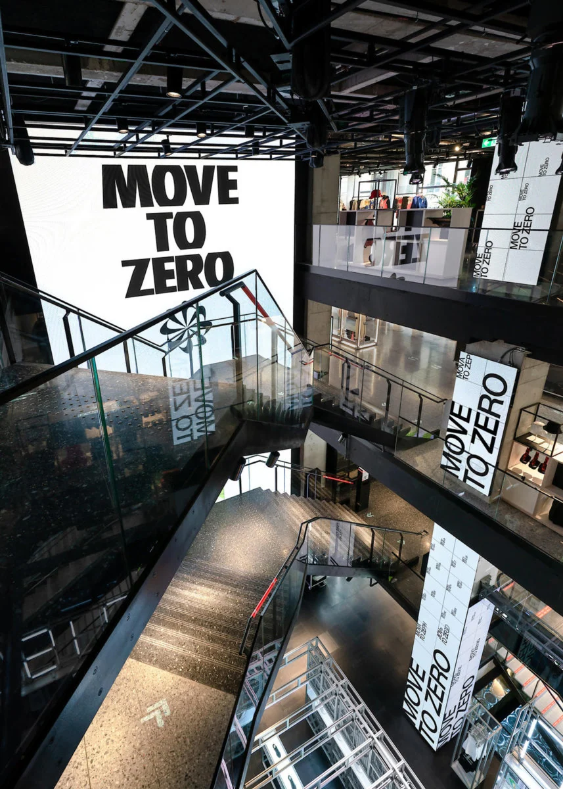
“우리는 모두의 놀이터인 지구에 대한 책임을 공유합니다. 그래서 지속 가능성과 순환을 통한 시작과 끝을 재구성했습니다. 탄소, 폐기물, 물, 화학에 집중해 2025년까지 목표를 달성할 것입니다.”
https://www.nikegrind.com/amorim/
‘무브 투 제로’의 2025년 목표
1) 모든 주요 소재(폴리에스터, 면, 가죽, 고무) 중 환경 친화적 사용을 50%로 늘려 온실 가스 배출량을 0.5M톤 감소시킨다.
2) 나이키의 확장된 공급망을 통해 매립지로 가는 폐기물을 100%로 감소시켰으며, 폐기물은 최소 80%가 재활용되었다.
3) 직물 염색 마무리 과정에서 1kg당 담수 사용량을 25% 감소시킨다.
이처럼 패션 업계에서는 탄소배출 감소와 폐기물 최소화를 위한 다양한 노력을 펼치고 있다.
나이키 그라인드(Nike Grind)
“스포츠의 미래를 위해”
- 1992년부터 나이키는 폐기물로 여겨지던 고무, 폼, 섬유, 가죽, 직물을 포함한 제조 폐기물, 사용되지 않는 제조 자재 및 수명이 다한 신발을 분리하여 재사용한 ‘나이키 그라인드(Nike Grind)’를 활용하기 시작하였다. 나이키 그라인드는 가구에서 달리기 트랙, 스케이트 보드. 노트북 슬리브까지 다양한 재품에 활용되고 있다.
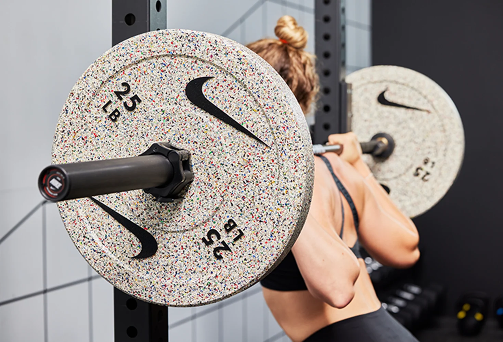
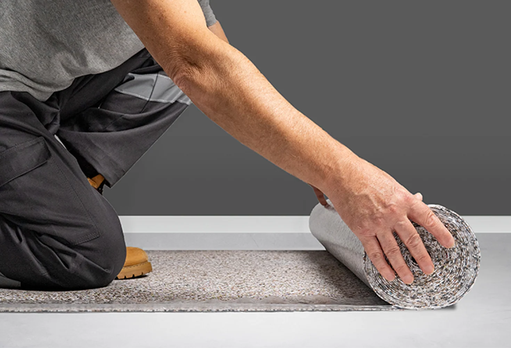
아디다스와 팔리(Adidas x Parley)
“해양 플라스틱을 재활용한 운동화”
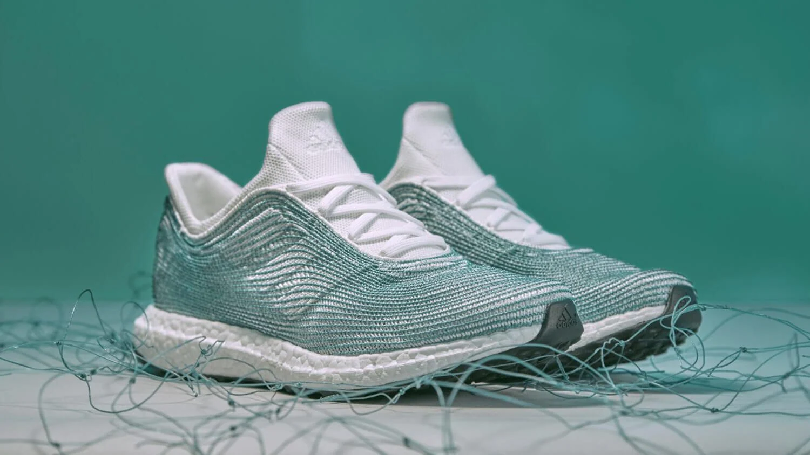
아디다스는 해양 환경 보호 단체인 팔리 포 디 오션스(Parley for the Oceans)와 협력하여 해양 플라스틱 폐기물을 재활용한 운동화를 개발하였다. 이 프로젝트는 해양 오염 문제를 해결하기 위한 혁신적인 시도로 주목받고 있다.
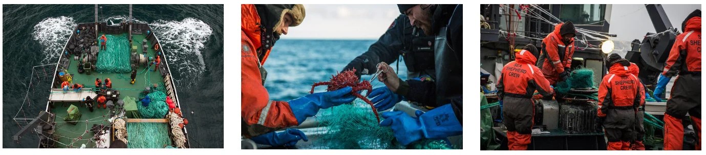
바다에서 수거한 플라스틱을 수거한 양은 2015년 이후 현재까지 5천만 켤레 이상의 친환경 제품으로 재활용되어 판매되었다. 신발의 갑피는 95%의 해양 플라스틱과 5%의 재활용 폴리에스터로 구성되어 있으며, 한 켤레당 11개의 플라스틱 병이 사용된다.
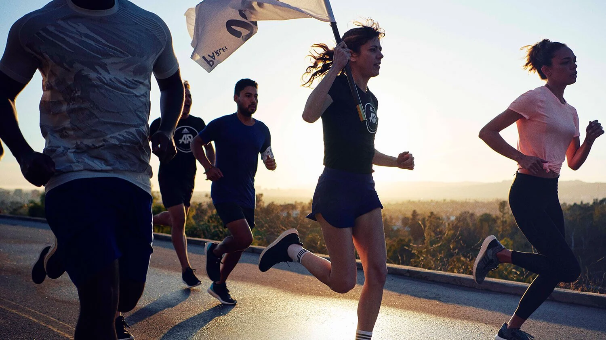
아디다스는 2025년까지 자사 제품의 90%를 재활용 소재로 제작하겠다는 목표를 세우고 순환
경제 모델을 도입하여 자원 낭비를 최소화하기 위해 노력하고 있다.
이러한 노력에는 아디다스 기업을 넘어 커뮤니티를 통해 ‘Run For The Oceans’라는 팀을 이루어 수백만 명의 러너가 함께 동참하고 있다.
https://about.starbucks.com/stories/2023/whats-inside-a-greener-store
https://www.gcrmag.com/starbucks-expands-greener-store-initiative-globally/
www.esgtoday.com
www.scsglobalservices.com
https://parley.tv/initiatives/adidasxparley
3. Singapore's Beach HDPE Hut HDPE 바다 쓰레기로 만든 해변 오두막
그림 9 Singapore's Beach HDPE Hut
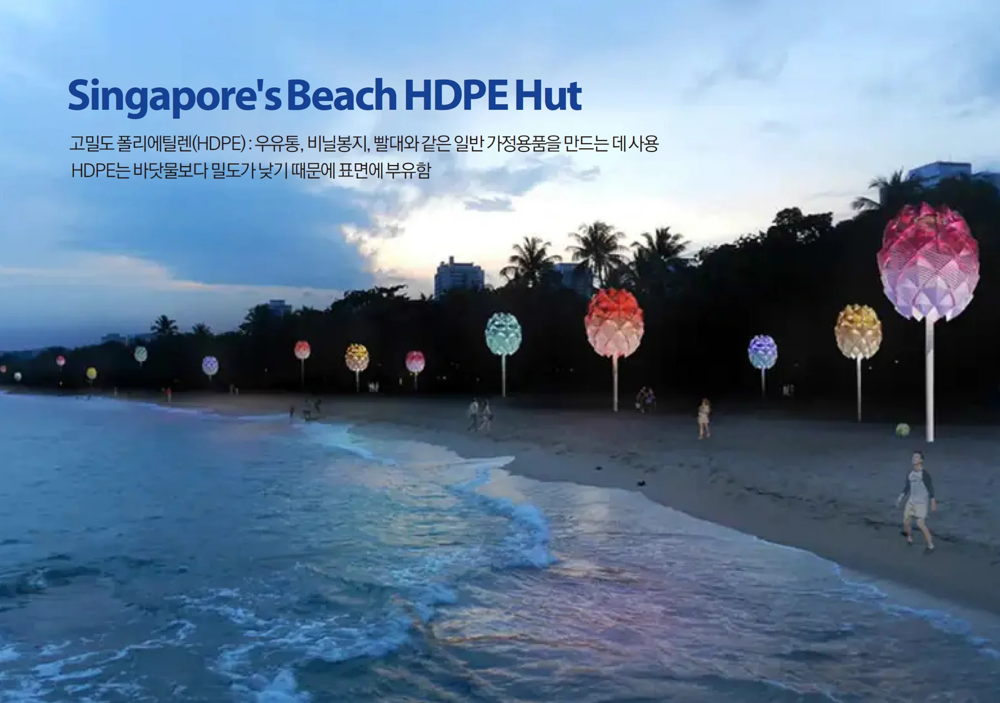
Singapore's Beach HDPE Hut 프로젝트의 목적은 해변에 휴식과 피난처를 제공하는 기능의 공공시설물이지만 궁극적으로는 해양 오염 문제에 대한 인식을 높이기 위한 업사이클링 시설물이다.
보통 바다에서 발견되는 해양플라스틱 쓰레기는 고밀도 폴리에틸렌(HDPE)인데 예를 들면 우유통, 비닐봉지, 빨대와 같은 일반 가정용품에 사용되는 소재이다. HDPE는 바닷물보다 밀도가 낮기 때문에 표면에 부유하는 데 본 프로젝트에서는 주변 바다에서 발견되는 HDPE 플라스틱을 색상별로 분류하고 파쇄한 후 녹여서 오두막 외부용 모듈식 타일을 만들었다.
Singapore's Beach HDPE Hut는 동남아시아 해변에서 발견되는 카수아리나 나무 씨앗 형태를 모티브로 하고 있다. 또한 재활용 HDPE 플라스틱으로 만든 모듈식 타일로 덮여 있는데, 이는 목재 지붕 널이 단순한 주택을 입히는 데 사용되는 것과 같은 방식으로 디자인되어 지역의 로컬리티 또한 살리고 있다.
이 프로젝트는 원래 싱가포르를 위해 개발되었지만, 현재는 호주 최초의 해양 플라스틱 해변 오두막을 건설하기 위해 협의 중이다.
지역 해변에서 발견되는 해양 쓰레기를 소재로 업사이클링하여 지역에 필요한 공공시설물로 기능을 제공하고 해변 사용자의 의식 또한 향상시키는 환경을 위한 공공디자인 사례이다.
그림 10 Singapore's Beach HDPE Hut
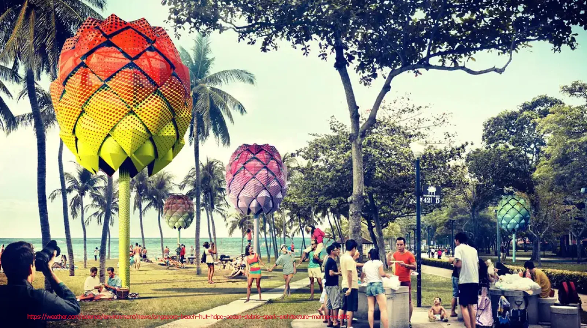
그림 11 Singapore's Beach HDPE Hut
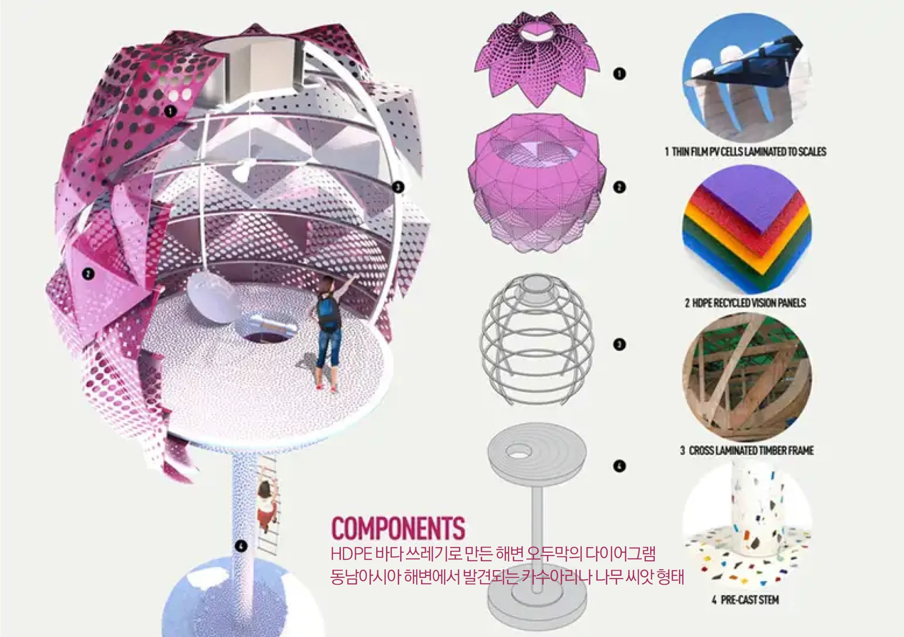
4. Singapore's Beach HDPE Hut 재활용된 플라스틱병으로 만든 예술학교
그림 12 New Wave
https://www.outdoordesign.com.au/news-info/a-new-wave-for-plastic-recycling/7342.htm
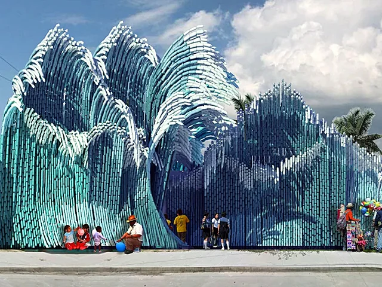
New Wave는 친환경 프로젝트의 일환으로 UMA(Ulf Mejergren Architects)가 멕시코에 예술 학교를 짓기 위해 해양에서 재활용된 플라스틱병을 사용할 것을 제안하면서 시작되었다.
본 프로젝트는 현재 매년 멕시코 바다에 버려지는 50만 톤의 플라스틱 폐기물을 활용하기 위해 플라스틱병을 재활용하여 무엇을 얻을 수 있는지 보여주는 것을 목표로 하고 있으며 교육공간으로 활용되는 동시에 공공에게 환경의 중요성을 전달하는 중요한 매개체의 역할도 하고 있다.
바다에서 수거된 플라스틱병은 바닥에 구멍이 뚫어 각각의 철근에 구멍을 뚫고 원하는 위치로 구부려 파란색부터 청록색, 흰색까지 그라데이션으로 칠해진 물결 모양의 기본 구조체로 만들어진다. 각 기본 구조체는 양쪽에 추가적인 플라스틱병의 접합을 통해 전체적으로 파도 모양으로 디자인된다. 지면에 가까운 병은 안정성을 높이기 위해 시멘트나 모래로 채워지며, 각 철근은 공중의 벽이나 슬래브에도 부착된다. 또한 본 공공공간은 비와 햇빛으로부터 피난처를 제공하며 평상시에는 공공장소의 벤치와 테이블의 기능과 함께 쉘터로 활용된다. 이 프로젝트는 이러한 독특한 형태를 통해 플라스틱이 해양 환경에 미치는 영향과 디자인 분야에서의 재활용 가능성을 강조한다.
그림 13 New Wave
https://www.outdoordesign.com.au/news-info/a-new-wave-for-plastic-recycling/7342.htm
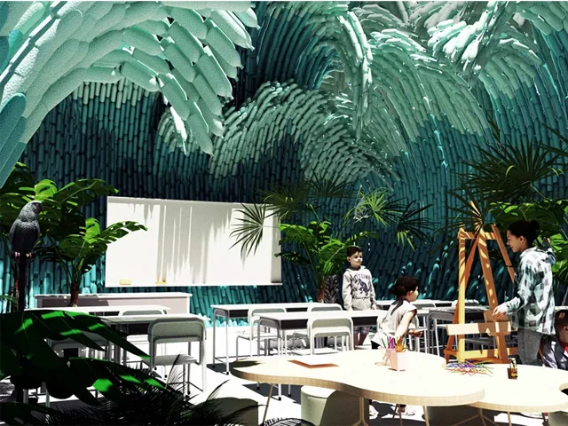
5. Recycled Island : a design project made from plastic waste in Rotterdam 강과 항구에서 쓰레기를 회수하여 만든 수상 공원 : 로테르담의 재활용 섬
그림 14 Recycled Island (C) Recycled Island Foundation
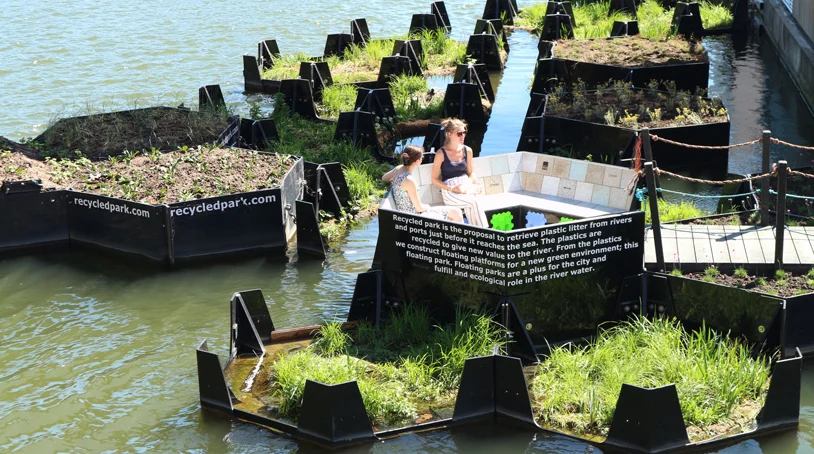
로테르담의 재활용 섬 재단(Recycled Island Foundation)은 로테르담의 강과 항구에서 쓰레기를 수거하여 바다에서 재활용된 플라스틱이 가치 있는 재료라는 것을 보여주는 140㎡의 육각형 블록으로 구성된 수상 공공공원(Recycled Island)을 만들었다.
본 프로젝트를 위해 강과 하구에서 플라스틱 쓰레기를 수집하기 위해, 1년 반이라는 기간 동안 3개의 수동 쓰레기 트랩을 개발하고 개발된 쓰레기 트랩을 통해 강의 하구에서 플라스틱을 포집하였다.
바다에서 재활용된 플라스틱 폐기물을 재료로 육각형 블록 소재를 만들고 이를 통해 140㎡의 떠다니는 공공공간을 디자인하였다. 본 인공섬은 쓰레기 재사용의 환경적 영향 외에도 달팽이, 딱정벌레, 물고기를 포함한 미세 및 거대 동물군 서식지를 제공하는 공생디자인(Symbios)을 통해 생태환경을 지원하고 있다.
그림 15 Recycled Island (C) Recycled Island Foundation
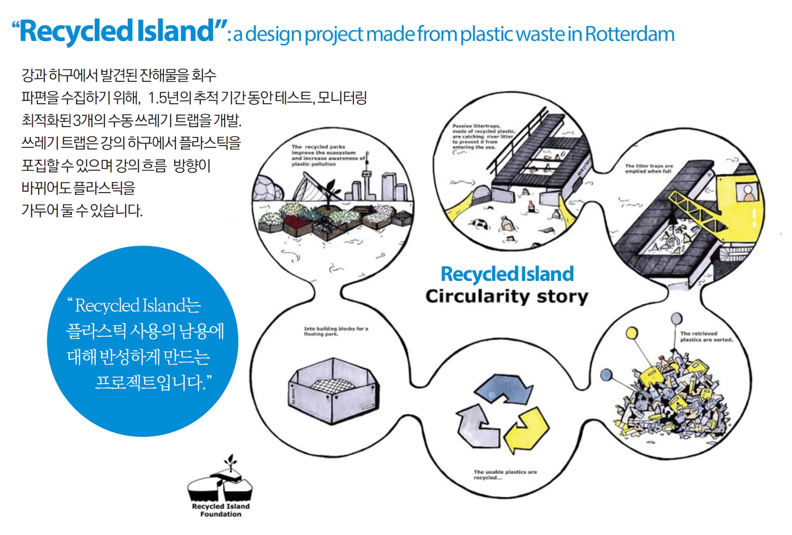
그림 16 Recycled Island (C) Recycled Island Foundation
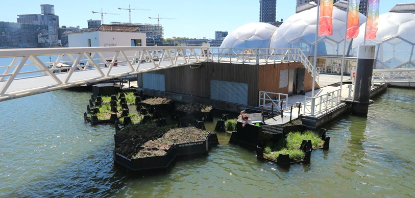
Ⅲ. 환경을 위한 공공디자인
현재 공공디자인의 정책 중에 상대적으로 미흡한 부분이 환경 부분이다. 공공디자인의 가장 기본적인 정책을 담고 있는 국가 공공디자인 진흥종합계획의 5대 전략과 19개 세부과제에도 친환경적 내용은 부족하게 담겨있으며 협력과 연계를 강조하는 공공디자인 정책관점에서 봤을 때 K-뉴딜이나 K-SDGs과의 시너지가 어려운 것도 사실이다.
환경적 공공가치 창출은 리사이클링과 업사이클링을 기반으로 한 다양한 실험과 시도를 통해 진행되고 있습니다. 예를 들면 요즘 가장 심각한 사회 문제 중 하나인 플라스틱 문제를 해결하기 위한 오픈소스 프로젝트는 플라스틱 재활용을 위한 지식, 노하우, 프로세스, 방법론 및 장비 제작에 대한 내용들을 함께 공유하고, 자원순환 활동을 통해 플라스틱 문제를 해소하기 위한 활동을 펼치며 공공가치를 창출하고 있다. 또한 바이오 필릭과 같은 환경심리행태관점의 공공영역의 그린디자인과 미세먼지이슈 등의 주제를 공공디자인 사업화하여 진행 중인데 환경적 관점은 ESG 기업 활동에서 가장 중요하며 범위도 넓은 부분이다.
기업의 친환경적 개선 투자가 공공영역의 활동기업에게 이루어진다면 친환경적인 지속가능성이 공공영역에 실현되고 전략과 수단으로서의 공공디자인 역할이 가능합니다. 가장 중요한 점은 공공디자인은 공공행정과 밀접한 관련이 있기 때문에 그 실현성과 파급력이 확보될 수 있으므로 환경을 위한 중요한 전략이자 수단이 될 수 있다.